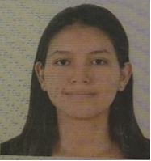

INFORMACION


Estudiante de ingenieria Electronica con la capacidad de diseñar, elaborar y coordinar estrategias y procedimientos ágiles y oportunos, cumpliendo las metas y objetivos previamente determinados. Consciente de su compromiso social para el desarrollo de su región.